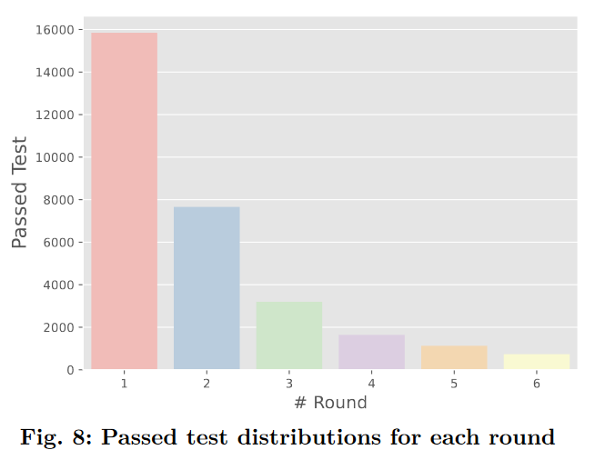

<!DOCTYPE html>
<html lang="en">
  <head>
    <meta charset="utf-8" />
    <meta name="viewport" content="width=device-width, initial-scale=1.0, maximum-scale=1.0, user-scalable=no" />

    <title>ChatUniTest</title>
    <link rel="shortcut icon" href="./favicon.ico" />
    <link rel="stylesheet" href="./dist/reset.css" />
    <link rel="stylesheet" href="./dist/reveal.css" />
    <link rel="stylesheet" href="./dist/theme/serif.css" id="theme" />
    <link rel="stylesheet" href="./css/highlight/base16/zenburn.css" />


  </head>
  <body>
    <div class="reveal">
      <div class="slides"><section  data-markdown><script type="text/template">
<style type="text/css"> 
h1,h2,h3,h4,p{ 
  text-align: left; 
}
h1.c,h2.c,h3.c{
  text-transform: capitalize;
}
h1.n,h2.n,h3.n,h4.n{
  text-transform: none;
}
h3.small{
  font-size: 55px;
}

img{
  text-align:left;
}
img.center{
  display: block; /* This is important for margin:auto to work */
  margin-left: 100px;
}
img.fl{
  float:left;
}
img.logo{
  margin-top: -30px;
  margin-bottom: -10px;
  max-width: 20%; 
  height: 60px; 
}
div.sma{
  font-size:35px;
  margin:40px 10px;
}
p.right{
  text-align:right;
  margin-right:100px;
}
p.main{
  font-size:28px;
}
h2.center,h3.center{
  text-align:center;
}
img.tem{
  border-radius: 8pt;
  height:700px;
}
#outter{
  display:flex;
  justify-content: space-around;
}
div.outter{
  display:flex;
  justify-content: center;
}
div.inner{
  display:flex;
  flex-direction: column;
  align-items:start;
  justify-content: space-evenly;
}
div.inner1{
  display:flex;
  flex-direction: column;
  align-items:start;
  justify-content: center;
}
div.shell{
  margin-top: -100px;
  margin-left:70px;
}
#ref{
  margin-left:100px;
  margin-top: -100px;
}
#cat{
  display:flex;
  flex-direction: column;
  justify-content:center;
}
span.green{
  color: #609966;
}
span.red{
  color: #EF5350;
}
span.yellow{
  color: #FFE17B;
}
span.blue{
  color: #5CD2E6;
}


</style> 

<div class="shell">
  <h2 class="c">ChatUniTest: a ChatGPT-based automated unit test generation tool</h2>
  <br/>
  <div style="text-align:left">
  <ul>
      <li>Authors:&emsp;Zhuokui Xie, Yinghao Chen, Chen Zhi<sup>∗</sup>, Shuiguang Deng, Jianwei Yin</li>
      <li>Source:&emsp;arxiv.org</li>
  </ul>
  <br/><br/>
  </div><p class="right">汇报人：王小娅</p>
  <p class="right">汇报时间：9.19</p>
</div>


</script></section><section  data-markdown><script type="text/template">

<div class="shell" style="margin-top:-100px">
  <h2>OUTLINE</h2><br/>
  <h3 class="n">Background : The Evolution of Automated Test Generation</h3>
  <h3 class="n">Motivation : Two Limitations of ChatGPT</h3>
  <h3 class="n">Approach : Preprocess, Generate, Validate, Repair</h3>
  <h3 class="n">Experiment Design and Results </h3>
  <h3 class="n">Summary </h3>
</div>

</script></section><section  data-markdown><script type="text/template">

<div class="shell" style="margin-top:-150px">
    
</div>

</script></section><section  data-markdown><script type="text/template">

<div class="shell" style="margin-top:-150px">
    
</div>

</script></section><section  data-markdown><script type="text/template">

<div class="shell">
<h1 class="c">PartⅠ. Background</h1>
</div>

</script></section><section  data-markdown><script type="text/template">


<div class="shell">
  <div class="inner">
    <h3 class="n">1. Program-analysis-based Unit Test Generation</h3>
    <ul>
      <li>EvoSuite</li>
      <li>Randoop</li>
    </ul>
    <p>Triumph in coverage, but falter in readability.</p>
    <br/>
    <h3 class="n">2. Language-model-based Unit Test Generation</h3>
    <ul>
      <li>AthenaTest, A3Test</li>
      <li>TESTPILOT</li>
    </ul>
    <p>Fail to correct fundamental errors || Insuitable to undocumented programs.</p>
  </div>
</div>

</script></section><section  data-markdown><script type="text/template">

<div class="shell">
<h1 class="c">PartⅡ. Motivation</h1>
</div>

</script></section><section  data-markdown><script type="text/template">

<div class="shell">
  <div class="inner">
    <h3 class="n">1. The limit text window of GPT-3.5</h3>
    </p>Prompt need enough length to embrace relevant infomation.</p>
    </p>Completion need enought space to get a good test.</p>
    <h3 class="n">2. Missing Java compiler and executor</h3>
    </p>The absence of validation components prevents ChatGPT from discovering its own mistakes.</p>
  </div>
</div>

</script></section><section  data-markdown><script type="text/template">


<div class="shell">
<h1 class="c">PartⅢ. Approach</h1>
</div>

</script></section><section  data-markdown><script type="text/template">

<div class="shell">
<!-- 放overview -->
  <div class="outter" >
    
    <div class="inner" style="margin-left:50px">
      <p>Part A. Preprocess</p>
      <p>Part B. Generation</p>
      <p>Part C. Validation</p>
      <p>Part D. Repair</p>
      <p>P.S. Validation and repair are performed alternately.</p>
    </div>
  </div>
  <p>For each input, the entire process is performed for a maximum of 6 times.</p>
</div>

</script></section><section  data-markdown><script type="text/template">

<div class="shell">
<!-- 写出所有的路径假设-->
  <div class="inner">
    <h3 class="n">The possible paths for each process are as follows: (query:0,1)</h3>
    <p>1. preprocess --> generate successfully --> parse successfully --> compile successfully --> run successfully --> <span class="green">passed</span> </p>
    <p>2. preprocess --> generate successfully --> parse unsuccessfully --> rule-based repair --> parse successfully --> compile successfully --> run successfully --> <span class="green">passed</span></p>
    <p>3. preprocess --> generate successfully --> parse successfully --> compile unsuccessfully --> ChatGPT-based repair --> compile successfully --> run successfully --> <span class="green">passed</span> </p>
    <p>4. preprocess --> generate successfully --> parse successfully --> compile successfully --> run unsuccessfully --> ChatGPT-based repair --> run successfully --> <span class="green">passed</span> </p

  </div>
</div>

</script></section><section  data-markdown><script type="text/template">

<div class="shell">
<!-- 解释preprocess的作用 -->
  <h3 class="n">Preprocessing</h3>
  <br/>
  <p>Traverses the project, parses each class file into an Abstract Syntax Tree(AST)</p>
  <p>Navigates the AST, collects the information at two levels: class and method.</p>
  <ul>  
    <li>Class level information: the package, imports, class signature, fields, and method signatures.</li>  
    <li>Method level information: method body, field access, getter/setter invocation, dependent class name, and method invocation.</li>  
  </ul>  
</div>

</script></section><section  data-markdown><script type="text/template">

<div class="shell">
<!-- 解释generation的作用 -->
  <div class="outter" style="margin-top:-150px">
    <div class="inner">
      <h3 class="n">Generation - focal context generation</h3>
      
    </div>
    <div class="inner" style="margin-left:50px">
      
    </div>
  </div>
</div>

</script></section><section  data-markdown><script type="text/template">

<div class="shell">
<!-- 解释generation的作用 -->
  <div class="outter">
    <div class="inner" style="margin-left:-80px">
      <h3 class="n">Generation - unit test generation</h3>
      <br/>
      <div class="outter">
        
        
      </div>
    </div>
    <div class="inner" style="margin-left:0px">
      <p>Embed the context into the corresponding prompt templates.</p>
      <ul>
        <li>{"role": "system","content":}</li>
        <li>{"role": "user","content":}</li>
      </ul>
      <p>It’s time to invoke ChatGPT!</p>
    </div>
  </div>
</div>

</script></section><section  data-markdown><script type="text/template">

<div class="shell">
<!-- 解释validation的作用 -->
  <div class="inner">
    <h3 class="n">Validation</h3>
    <p>1. Extract: Code block extraction based on string matching.</p>
    <p>2. Parser: Utilizes a Java parser to verify the test’s syntax. If a syntactic error is detected, resorts to rule-based repair.</p>
    <p>3. Compile and Run:</p>
    <p>If the test fails yo compile or execution, resorts to ChatGPT-based repair.</p>
  </div>
</div>

</script></section><section  data-markdown><script type="text/template">

<div class="shell">
<!-- 解释repair的作用,解释一下两种repair针对的错误类型 -->
  <h3 class="n" style="padding-left: 0px;">Repair</h3>
  <div class="outter">
    <div class="inner">      
        <p>1. Rule-based repair: </br>correcting simple and common errors</p>
        <ul>
          <li>Syntactic repair</li>
          <li>Imports repair</li>
        </ul>
        <p>2. ChatGPT-based repair: </p>
        <p>targets more complex and challenging errors </br>that require modifications to the code structure.</p>
    </div>
    <div class="inner" style="margin-left:150px">
      
    </div>
  </div>
</div>

</script></section><section  data-markdown><script type="text/template">

<div class="shell">
<h1 class="c">PartⅣ. Experiments</h1>
</div>

</script></section><section  data-markdown><script type="text/template">

<div class="shell">
<!-- 4个RQs, 分上下左右四块 -->
  <div class="outter">
    <div class="inner" style="margin-right:50px">
      <div>
        <h4 class="n">RQ1 - How is the quality of the generated unit test cases?</h4>
      </div>
      </br>
      <div>
        <h4 class="n">RQ2 - How does the performance of ChatUniTest compare against EvoSuite, AthenaTest, and A3Test?</h4>
      </div>
    </div>
    <div class="inner">
      <div>
        <h4 class="n">RQ3 - What are the contributions of different components of ChatUniTest?</h4>
      </div>
      </br>
      <div>
        <h4 class="n">RQ4 - How much does it cost to generate unit tests? </h4>
      </div>
    </div>
  </div>
</div>

</script></section><section  data-markdown><script type="text/template">

<div class="shell">
  <h2>RQ1</h2>
  <div class="inner">
    
    <p>10 projects, the undersituated are created after December 1, 2021.</p>  
    <p>5 types of different attempts, There are significant differences between different projects.</p>
  </div>  
</div>

</script></section><section  data-markdown><script type="text/template">

<div class="shell">
  <div class="outter" style="margin-top:-100px">
    
    <div class="inner" style="margin-left:100px">
      <h3 class="n">Testing APIs invocations</h3>
      <p>Utilization of TestAPIs ensure the quality of unit tests</p>
      <p>JUnit assertion APIs: Verify if the expected result matches the actual result.</p>
      <p>Mockito APIs: Creating and managing mock objects to decouple test cases from external dependencies.</p>
    <div>
  </div>  
</div>

</script></section><section  data-markdown><script type="text/template">

<div class="shell">
  <h2>RQ2</h2>
  <div class="outter">
    
    <div class="inner1" style="margin-left:100px">
      <p>Branch coverage: Number of Executed Branches / Total Number of Branches</p>
      <p>Line coverage: Number of Executed Statements / Total Number of Statements</p>
      <p>ChatUnitTest outperforms EvoSuite in both branch and line coverage</p>
    </div>
  </div>  
</div>

</script></section><section  data-markdown><script type="text/template">

<div class="shell">
  <div class="inner1">
    
    <p>Method line coverage : The proportion of executed statements in the tested class, out of all the statements, after executing a unit test generated for a specific method.</p>
    <p>ChatUniTest generally outperforms both AthenaTest and A3Test on 15 out of 17 methods.</p>
  </div>  
</div>

</script></section><section  data-markdown><script type="text/template">

<div class="shell">
  <div class="inner1">
    
    <p>Correct Test Cases (%): No explanation necessary.</p>
    <p>Focal Method Coverage (%): The number of focal methods that are covered by at least one of the generated test cases / all focal methods</p>
  </div>  
</div>

</script></section><section  data-markdown><script type="text/template">

<div class="shell">
<!-- RQ3 fig7 及其解释 , 左图右文-->
  <h2>RQ3</h2>
  <div class="outter">
    
    <div class="inner1" style="margin-left:100px">
      <p><span class="blue">The generation component</span> has the lowest proportion of correctly generated test cases.</p>
      <p><span class="blue">The rule-based repair component</span> significantly reduces the proportion of syntax errors (89.19%), lowers the proportion of compile errors (10.50%), and increases the number of correct cases by 15.54%.</p>
      <p><span class="blue">The ChatGPT-based repair component</span> is the most significant contributor.</p>
    </div>
  </div>  
</div>

</script></section><section  data-markdown><script type="text/template">

<div class="shell">
<!-- RQ3 fig8 及其解释 , 左图右文-->
  <h2>RQ3</h2>
  <div class="outter">
    
    <div class="inner1" style="margin-left:100px">
      <p>Each round indicates the number of times ChatGPT was queried.</p>
      <p>A test had a chance to go through the generation component once and ChatGPT-based repair five times.</p>
      <p>Rounds 2 - 6 : Approximately half the quantity compared to the previous round.</p>
    </div>
  </div>  
</div>

</script></section><section  data-markdown><script type="text/template">

<div class="shell">
  <h2>RQ4</h2>
  <div class="inner1">
    
    <p>Repair accounts much more than generation.</p>
    <p>The complexity for test generation differ from across projects.</p>
  </div>  
</div>

</script></section><section  data-markdown><script type="text/template">

<div class="shell">
  <div class="inner1">
    
    <p>The <span class="red">red</span> regression line represents the mean trend.</p>
    <p>The <span class="green">green</span> line signifies the sum of prompt and completion token costs equating to 4096. Either within the range or truncate.</p>
  </div>  
</div>

</script></section><section  data-markdown><script type="text/template">

<div class="shell">
<h1 class="c">PartⅤ. Summary</h1>
</div>

</script></section><section  data-markdown><script type="text/template">

<div class="shell">
<!-- 
1. Conclusion  
2. Pros  思虑周全
3. Cons  那两个奇怪的指标我不能理解(但也是沿用的),prompt构建代价太高
4. Insights  prompt只能依赖线性描述,没有深入去分析,哪些例子在这种描述的极限之外
-->
  <div id="inner">
    <h3 class="n">Conclusion</h3>
    <p>1. An adaptive focal context generation algorithm</p>
    <p>2. The generate-validate-repair framework.</p>
    <h3 class="n">Strengths</h3>
    <p>All essential elements required for high-quality unit testing have been taken into consideration.</p>
    <h3 class="n">Weaknesses</h3>
    <p>Two inappropriate criteria were employed.</p>
    <p>The overview does not reflect the interaction between the validation and repair processes.</p>
    <h3 class="n">Insights</h3>
    <p>What constitutes a good prompt?</p>
  </div>
</div>

</script></section></div>
    </div>

    <script src="./dist/reveal.js"></script>

    <script src="./plugin/markdown/markdown.js"></script>
    <script src="./plugin/highlight/highlight.js"></script>
    <script src="./plugin/zoom/zoom.js"></script>
    <script src="./plugin/notes/notes.js"></script>
    <script src="./plugin/math/math.js"></script>
    <script>
      function extend() {
        var target = {};
        for (var i = 0; i < arguments.length; i++) {
          var source = arguments[i];
          for (var key in source) {
            if (source.hasOwnProperty(key)) {
              target[key] = source[key];
            }
          }
        }
        return target;
      }

      // default options to init reveal.js
      var defaultOptions = {
        controls: true,
        progress: true,
        history: true,
        center: true,
        transition: 'default', // none/fade/slide/convex/concave/zoom
        slideNumber: true,
        plugins: [
          RevealMarkdown,
          RevealHighlight,
          RevealZoom,
          RevealNotes,
          RevealMath
        ]
      };

      // options from URL query string
      var queryOptions = Reveal().getQueryHash() || {};

      var options = extend(defaultOptions, {"width":1780,"height":620,"margin":0.04,"progress":true,"transition":"none","slideNumber":true}, queryOptions);
    </script>


    <script>
      Reveal.initialize(options);
    </script>
  </body>
</html>
